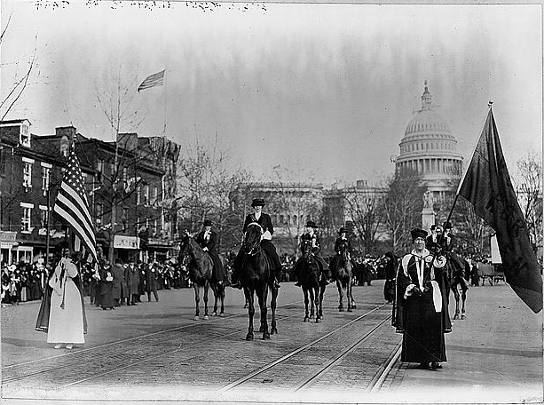

Activism
In addition to her career in botany, Mary Agnes Chase was also a dedicated activist. She faced discrimination in the male dominated scientific field. For example, she was excluded from expeditions to Panama in 1911 and 1912 because the expedition's benefactors feared the presence of women researchers would distract men. She took action by becoming a women’s suffragist. During World War I, Chase marched on Washington in support of the Women’s Suffrage Movement and was jailed for rally picketing at the White House and making a speech in Lafayette Square. She was arrested again for collaborating with other women to burn copies of presidential speeches containing the words "freedom" and "liberty", until women had the right to vote. Chase was also a prohibitionist and a supporter of the National Association for the Advancement of Colored People (NAACP).
